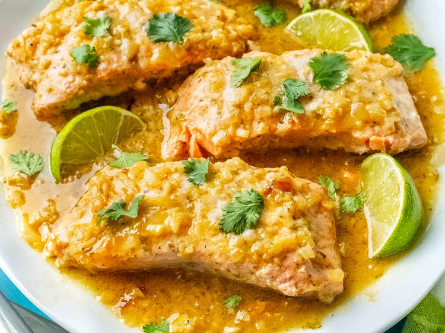

Home
Poached Salmon in Coconut-Lime Sauce

Description
This poached salmon in coconut lime sauce has a Pacific Rim flair, with hints of ginger and garlic in the rich sauce. Ready in about a half hour, it is delicious served plain or over rice.
Ingredients
- 1 tablespoon olive oil
- 1/3 cup finely chopped onion
- 1 tablespoon grated fresh ginger
- 2 cloves garlic, minced
- 1 cup coconut cream
- 1 teaspoon fish sauce
- 1 tablespoon soy sauce
- 1 lime, zested
- 2 limes, juiced
- salt and freshly ground black pepper to taste
- 4 (6 ounce) skinless salmon filets
- fresh cilantro sprigs for garnish (optional)
- lime slices for garnish (optional)
Directions
- Steps 1 Heat olive oil in a large nonstick skillet over medium heat. Add onion and cook, stirring occasionally, about 3 minutes. Stir in ginger and garlic and cook until garlic is fragrant, about 30 seconds.
- Steps 2 Add coconut cream, stirring well to break up any solids. Stir in fish sauce, soy sauce, lime zest, and lime juice. Taste the sauce and season with salt and pepper. Bring to a boil, then reduce heat and simmer about 5 minutes.
- Steps 3 Pat salmon filets dry with paper towels, and add to the sauce, skin side down. Spoon some of the liquid over the top of each filet.
- Steps 4 Cover and cook until salmon flakes easily with a fork, about 10 minutes. An instant read thermometer should reach 130 degrees F (54 degrees C). Let salmon rest for 5 to 10 minutes before serving; the temperature will rise.
- Steps 5 Ladle sauce onto each plate, then add a salmon filet, and add a bit of sauce on top. Garnish with fresh cilantro sprigs and lime slices, if desired.